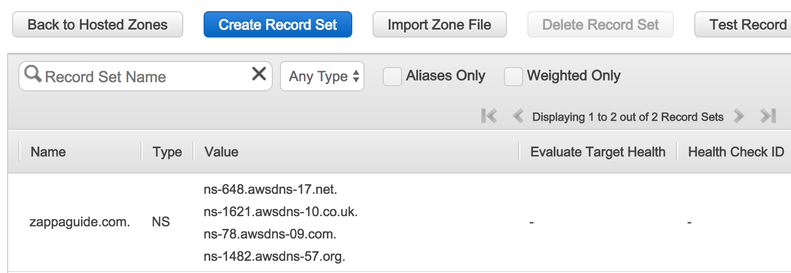

Working with Route53¶
This page lists various activites that may be necessary to perform when leveraging Zappa
Create a Hosted Zone in Route53¶
- Navigate to the Route53 console and click
Create a Hosted Zone - In the Domain Name field, put only the bare or apex form of the domain name. This should be done regardless of the subdomain you wish to host. For our example we would enter:
Domain Name: zappaguide.com Type: Public Hosted zone -
The console should show you a number of DNS records that you must provide to your Registrar  Once you enter these values into your Registar it may take some time for the values to propagate depending on the prior settings of the Registrar. In this case your domain name Registrar is someone like GoDaddy or NameCheap.
-
Verify your DNS settings have propagated Using some online tools confirm that for this domain, the DNS Nameservers are correct. If they are not updated, it may take some more time for the information to be propagated.
Another useful DNS query tool is https://dns.google.com